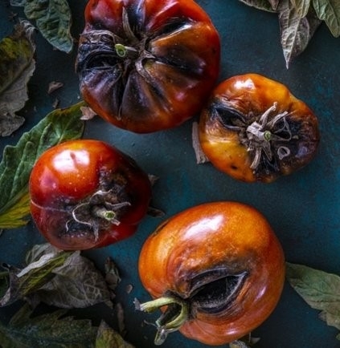

A zöldborsó
A borsó vagy veteményborsó, kerti borsó, kultúrborsó, termesztett borsó (Pisum sativum) a pillangósvirágúak családjába tartozó növényfaj. Tápláléknövény, az emberiség egyik legrégibb kultúrnövénye. Fontos fehérjeforrásnak számít az emberi táplálkozásban, manapság elsősorban zöldségként és állateledelként kerül felhasználásra.

Származása, elterjedése
Magyarországon a veteményes kertekben mindenütt megtalálható kedvelt zöldségféle. Szántóföldi paraszti termesztése elsősorban a Tiszántúlon (Hajdú-Bihar, Szolnok, Békés vármegyék), illetve a Dunántúl némely körzeteiben (Fejér és Tolna vármegye) alakult ki. Termesztett változatai több vad őstől származnak.
Termesztésbe vétele i. e. 4-5000 évvel Közép-Ázsia központi és déli területein (Afganisztán, Irán, Turkesztán) történhetett és a neolitikus kultúrákkal terjedt el Európában. A bronzkorból bőséges régészeti leletek bizonyítják Kárpát-medencei és nyugat-európai ismeretét. A magyarság még a vándorlása idején ismerhette meg. A magyar borsó szó ótörök eredetű.

Leírása
Az alapfaj gyökere mélyre hatol, oldalgyökerei gazdagon behálózzák a talajt, rajtuk nitrogéngyűjtő
baktériumok élnek. Hajtása felálló vagy elfekvő dudvaszár viaszos bevonattal; levélkacsban végződik. Levelei
szárnyasan összetettek, hamvasak, széles pálhájuk van.
Virágai fehérek, magánosak vagy kevés tagú fürtben
állnak. Termése hüvely. Áprilistól júliusig virágzik.
A termesztett fajták különböznek a szártagok hosszúságában és színében, a pálhalevelek és a lomblevelek
alakjában, a hüvely méretében és a termés alakjában.
Termesztett alakkörei
Alapvetően három fajtacsoportot különböztetünk meg, de ezeken belül más szempontok, bogyó nagysága, színe alapján is osztályozzák:
- cukorborsó: a terméshüvely belső, rostos rétege hiányzik, hüvelyestül fogyasztják.
- kifejtő borsó: magjuk sima, cukortartalmuk gyorsan alakul át keményítővé, rövid idő van a betakarításukra. Ide tartoznak az étkezési száraz (zöld vagy sárga magvú) borsók is.
- velőborsó: a cukortartalom lassan alakul át keményítővé, hosszabb ideig zsenge marad.
Termesztése
A zöldborsó világszerte népszerű zöldség. 2021-ben a zöldborsót több mint 80 országban termesztették, és az éves termés mennyisége meghaladta a 26 millió tonnát.
A világ legnagyobb borsó termelői közé tartozik Kína, India, Albánia, Mali és Üzbegisztán. Ezek az országok a 2021-es termelésük alapján az első öt helyen álltak. 2021-ben Kína és India az éves termés több mint felét (66%) adták a világ zöldborsó termelésének.
A borsót eredetileg száraz állapotban fogyasztották. A zöldborsófogyasztás a 15–16. századtól jött szokásba Nyugat-Európában. Eleinte a hüvelyével együtt főzték meg. A 16–17. századi magyar botanikai irodalom kétféle borsót különböztetett meg: az apróbb magvú mezei borsót és a nagyobb magvú kerti borsót. Magyarországon bárhol termeszthető, a hideget jól tűri, egyes fajták a −10 °C-ot is károsodás nélkül elviselik. Nagy melegben a szemek aprók maradnak. Március, április hónapban szakaszosan vetjük, egyes fajták között egy-két hét különbséggel. Talajban nem válogat, tápanyag-, vízigénye közepes, ha a téli csapadék bőséges volt, akkor csak a virágzásakor öntözzük. A termésmennyiség és a minőség miatt nagyon fontos a legmegfelelőbb betakarítási időpont kiválasztása. Túl korai szedésnél alacsony lesz a termésátlag, viszont zsenge, édes szemeket kapunk, míg a túl kései szedésnél a minőség lesz rossz, kemények, nehezen fővők lesznek a szemek. A szedést követően hűvös helyen tároljuk a feldolgozásig, eltevésnél, gyorsfagyasztásnál törekedjünk arra, hogy két-három órán belül tudjuk feldolgozni.
Fontosabb kártevői és betegségei
| Megnevezése | Latin neve | Rövid leírása | További információ |
|---|---|---|---|
| Borsó-mozaikvírus | pea seed-borne mosaic | Érkivilágosodás, levélsárgulás és a fertőzés súlyosságától függően eltérő mértékű szemveszteség jellemzi. | |
| Borsó levélsodródás mozaikvírus | pea leaf roll Luteovirus | Hajtáscsúcselhalás, bőrszerű levélsodródás jellemzi. |  |
| Fuzáriumos hervadás | F | Fusarium oxysporum | 
|
| Fuzáriumos gyökérnyak rothadás | Fr | Fusarium radicis |  |
| Kladosporiumos betegség | C | Cladosporium fulvum | 
|
| Szürke levélfoltosság | St | Stemphylium botryosum | 
|
Felhasználása
Felhasználható nyersen, aszalva, savanyúságnak, levesnek, mártásnak, passzírozva üdítőitalnak. Szemben a gyümölcsökkel, amelyek nyersen a magasabb C-vitamin tartalom miatt egészségesebbek, a paradicsomnak főzve nagyobb a tápértéke, mert a likopin így könnyebben ki tud szabadulni a növényi rostok közül.[11]
Hámozva a diétás étrendben is alkalmazható, mert így könnyebben emészthetővé válik.
A paradicsomnövény szára, levelei és csészelevelei stb. enyhén mérgezők, ezért nem fogyaszthatók. Az éretlen paradicsom kevésbé problémás, de érdemes inkább az érett paradicsomot fogyasztani.
Tápanyagok
Táplálkozási értéke abban rejlik, hogy harmonikus összetételben tartalmazza a különböző aroma anyagokat, amelyet más növények ízben nem tudnak megközelíteni. A vitaminok közül legjelentősebb a C-vitamin (20–30 mg), de még 11-12 féle vitamin található benne, közöttük az A, B1, B2, ezek mellett jelentős mennyiségben (1,6 mg) tartalmaz karotint.
Gyógyhatása
Élelmezési célok mellett gyógyhatása is jelentős. A tomatin nevű alkaloidájából gombás betegségek, gyulladásos folyamatok elleni kenőcsöket készítenek.
A benne található likopin egészségmegőrző hatású, csökkenti bizonyos daganatos betegségek kialakulásának esélyét (prosztata, gyomor, emlő), védelmet nyújt degeneratív idegrendszeri megbetegedésekkel szemben, jelenléte a bőrben véd a káros UV-sugaraktól. Kísérletileg bebizonyították, hogy a bogyó felszínhőmérsékletének 30-32 Celsius-fokra emelkedésével leáll a likopinképződés.
A népgyógyászatban ízületi gyulladás kiegészítő kezelésére szárított leveles hajtását alkalmazzák fürdővízbe téve.
Zöldség vagy gyümölcs?
Az Amerikai Egyesült Államokban a 19. század végén vámi pereskedés is kerekedett abból, hogy zöldség-e vagy gyümölcs a paradicsom termése. Botanikai szempontból nincs értelme a kérdésnek, mert a zöldség és a gyümölcs kifejezések nem tudományos, hanem gazdasági/felhasználói fogalmak. Botanikai szempontból a paradicsom növénynek termése, azon belül is bogyótermése van. A paradicsom termesztéstechnológiáját és felhasználását tekintve viszont egyértelműen zöldség. A gyümölcsök termesztése ugyanis évelő, több évig termő ültetvények formájában jellemző (eltekintve a szamóca napjainkban használatos egyéves technológiájától). A zöldségféléket – így a paradicsomot is – pedig jellemzően egyéves kultúraként termesztjük, melyet minden évben újra kell telepíteni
Jegyzetek
- A taxon a Tropicos adatbázisban. Tropicos. (Hozzáférés: 2015. július 19.)
- Engloner A., Penszka K.,Szerdahelyi T.. A hajtásos növények ismerete. Budapest: Nemzeti Tankönyvkiadó, 153. o. (2001)
- Balázs Sándor: Zöldségtermesztők kézikönyve (1989, 1994), Kempelen Farkas Digitális Tankönytár
- http://www.fao.org/faostat/en/#data/QC%7Cpublisher=United Nations, Food and Agriculture Organization, Statistics Division (FAOSTAT)
- Boross Marietta: A nagy-budapesti és pestkörnyéki paradicsomkultúra gazdasági és néprajzi vizsgálata (Népr. Ért., 1956)
- Somos András: A paradicsom (Bp., 1959)
- Paradicsom termesztés - Gondozás betegségek kártevők. http://www.tuja.hu
- Kertészeti Lexikon (Mezőgazdasági Kiadó, Budapest 1963)
- Tanszék (Hozzáférés: 2013-04-24). [2013. március 17-i dátummal az eredetiből archiválva]. (Hozzáférés: 2013. április 24.)
- http://www.terebess.hu/tiszaorveny/zoldseg/paradicsom.html
- Italian chefs knew it all along: Cooking plump red tomatoes boosts disease-fighting, nutritional power, Cornell researchers say, Cornell News, 2002. április 19.
- Ehető vagy mérgező az éretlen, zöld paradicsom?
- tomatine." McGraw-Hill Dictionary of Scientific and Technical Terms. McGraw-Hill Companies, Inc., 2003. Answers.com 28 Mar. 2010. http://www.answers.com/topic/tomatine
- Zhang, C. X.; Ho, S. C.; Chen, Y. M.; Fu, J. H.; Cheng, S. Z.; Lin, F. Y. (2009). "Greater vegetable and fruit intake is associated with a lower risk of breast cancer among Chinese women". International Journal of Cancer 125 (1): 181–188
- Rao, A. V.; Balachandran, B. (2002). "Role of oxidative stress and antioxidants in neurodegenerative diseases". Nutritional Neuroscience 5 (5): 291–309.
- Fall, P. A.; Fredrikson, M.; Axelson, O.; Granérus, A. K. (1999). "Nutritional and occupational factors influencing the risk of Parkinson's disease: A case-control study in southeastern Sweden". Movement Disorders 14 (1): 28–37.
- Suganuma, H.; Hirano, T.; Arimoto, Y.; Inakuma, T. (2002). "Effect of tomato intake on striatal monoamine level in a mouse model of experimental Parkinson's disease". Journal of Nutritional Science and Vitaminology 48 (3): 251–254.
- Házipatika - Likopin. [2013. május 27-i dátummal az eredetiből archiválva]. (Hozzáférés: 2019. augusztus 13.)
- A hőmérséklet hatása támrendszeren termesztett paradicsom (Lycopersicon esculentum Mill.) likopin tartalmára
- Dános B.. {{{title}}}. Budapest: Argumentum, 294. o. (2006)
- Susanszky Ivan: Most akkor ez zöldség vagy gyümölcs? origo.hu. (magyarul) Budapest: Mediaworks Hungary Zrt. (2013. máj. 29.) (Hozzáférés: 2022. nov. 19.) (html)
- Hanula Zsolt: Akkor most zöldség vagy gyümölcs a paradicsom? index.hu. (magyarul) Budapest: Index.hu Zrt. (2014. dec. 14.) (Hozzáférés: 2022. nov. 19.)
- Bálint gazda: Miért vegyük csodaszámba a paradicsomot? balintgazda.hu. (magyarul) Budapest: Média Online Bt. (2022. aug. 8.) (Hozzáférés: 2022. nov. 19.) (html) Korábbi cikk 2022. augusztus 8-án frissített változata..
- Maszlay Bernadett kertészmérnök: Paradicsom zöldség, vagy gyümölcs? 5 egyértelmű érv, ami végre tisztázza a kérdést. plantae.hu (magyarul) (Hozzáférés: 2022. nov. 19.)
További információk
- Most akkor gyümölcs vagy zöldség a paradicsom?
- A paradicsom termesztése és felhasználása
- Terebess konyhakert: Különleges paradicsomok
- Magyar néprajzi lexikon
- Paradicsom.lap.hu - linkgyűjtemény
- Paradicsomlé befőzés recept
- Paradicsomtorta recept
- Paradicsom, a fiatalító: mire hat?
- A paradicsom jótékony hatása